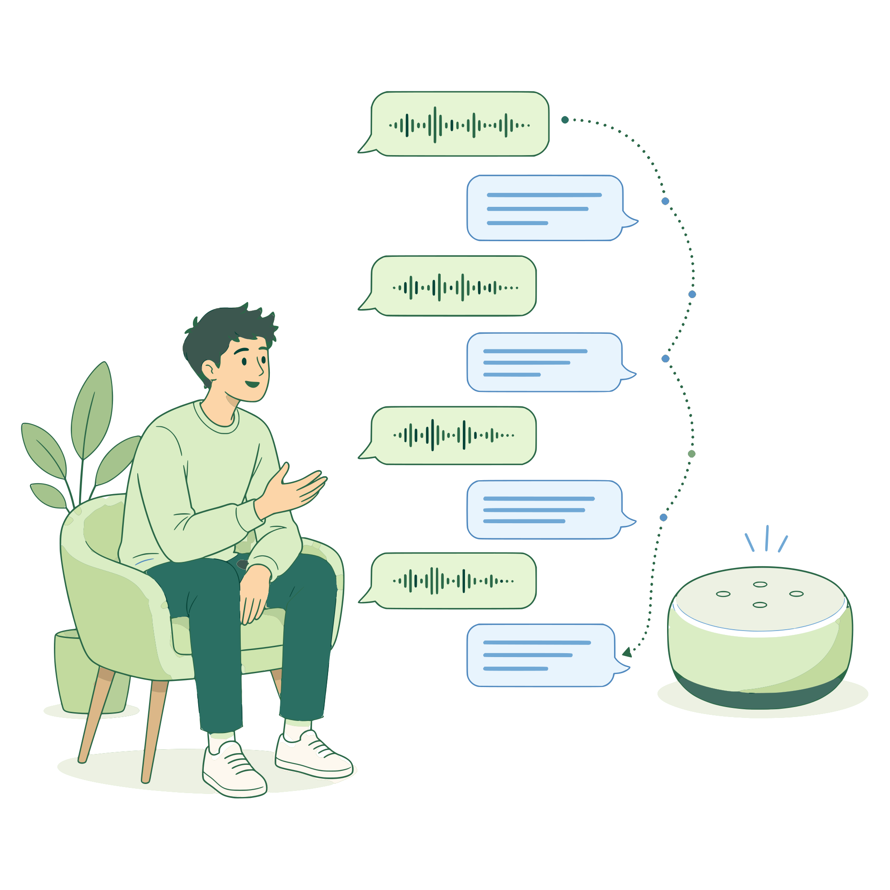
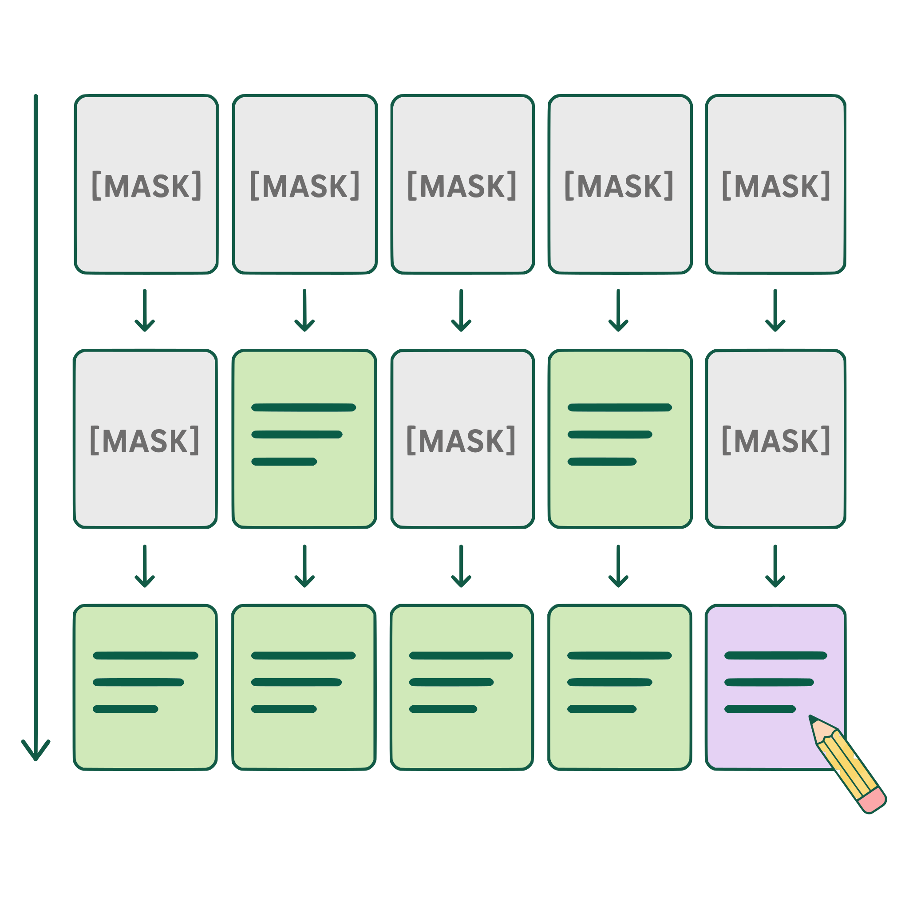

Spoken Dialogue Systems
Models that understand and respond in speech for natural, multi-turn conversations. Research challenges include remembering dialogue history and using it to generate coherent responses.
Ph.D. Candidate · Seoul National University
Context-aware guidance
for faithful generation.
I am a Ph.D. candidate in Electrical and Computer Engineering at Seoul National University, advised by Prof. Sungroh Yoon.
My research focuses on spoken dialogue systems and diffusion language models (Diffusion LMs), with the goal of making generated outputs faithful to their context. I study how models use dialogue history, reference text, and language cues, and develop context-aware guidance to shape their influence on generation.
I am particularly interested in which context to emphasize, where to apply guidance, and how strongly to apply it. This connects context-faithful spoken responses, controllable text editing, and language-specific accent guidance in code-switched speech.
Previously, I received my M.S. from the Graduate School of Data Science and my B.S. in Electrical and Computer Engineering at Seoul National University.
Research & Publications
Spoken dialogue systems and Diffusion LMs, connected through context-aware guidance.

Models that understand and respond in speech for natural, multi-turn conversations. Research challenges include remembering dialogue history and using it to generate coherent responses.

An alternative to autoregressive generation using continuous or discrete diffusion. Topics include parallel decoding, iterative refinement, and controllable text generation and editing.
Methods that steer text and speech generation using dialogue history, reference text, or language cues, helping outputs remain faithful to the relevant information and constraints.
* Equal contribution. † Corresponding author.
EMNLP 2026OralConference on Empirical Methods in Natural Language Processing (Main)projectarXivcodedataset
Training-free control of accent at the phrase level in code-switching text-to-speech.
INTERSPEECH 2026Conference of the International Speech Communication AssociationarXivcode
Strengthens the influence of relevant dialogue history through context-aware decoding.
EMNLP 2026Conference on Empirical Methods in Natural Language Processing (Main)arXivprojectcodedataset
Teaches audio LLMs to reason about who said what by grounding answers in counterfactual voices.
ACL 2026Annual Meeting of the Association for Computational LinguisticsarXivprojectcodedataset
Trains and evaluates voice assistants to handle interruptions from third-party speakers.
IEEE JSTSP 2026IEEE Journal of Selected Topics in Signal Processing, vol. 20, no. 1, pp. 90-98, January 2026paper
Shows why speech-specific neurons are hard to isolate in multimodal LLMs.
ACL 2025Annual Meeting of the Association for Computational LinguisticsarXiv
Controls the degree of text editing in a Diffusion LM, from coarse changes to fine adjustments.
ACL Findings 2025Findings of the Association for Computational LinguisticsarXivdemodataset
Benchmarks how voice interaction models recall and use information from earlier dialogue turns.
ICASSP 2025OralIEEE International Conference on Acoustics, Speech, and Signal ProcessingprojectarXiv
Efficiently personalizes voice adapters for multiple speakers simultaneously.
ICASSP 2025IEEE International Conference on Acoustics, Speech, and Signal ProcessingprojectarXiv
An inference-time guidance method that keeps speaker adaptation robust for unseen voices.
INTERSPEECH 2024Annual Conference of the International Speech Communication AssociationprojectarXiv
One-shot personalized text-to-speech using lightweight low-rank adapters.
ACML 2023Oral · Best Paper AwardAsian Conference on Machine LearningprojectarXiv
One-shot video editing that keeps backgrounds consistent via masked blending.
Background
Ph.D. Candidate in Electrical and Computer Engineering
Mar 2022 – Present
M.S., Graduate School of Data Science
Mar 2020 – Feb 2022
B.S. in Electrical and Computer Engineering
Mar 2014 – Feb 2020
Streaming Personalized Text-to-Speech
Dec 2023 – Present
Parameter-Efficient Fine-Tuning in Multimodal AI Models
Sep 2023 – Sep 2024
Electrical and Computer Engineering
Mar 2019 – Aug 2020
Awards & Teaching
Asian Conference on Machine Learning (ACML)
2023
Seoul National University
2020
Seoul National University
2015, 2019
Teaching Assistant · Samsung Electronics
Apr – May 2026
Teaching Assistant · Seoul National University
2022, 2024, 2025